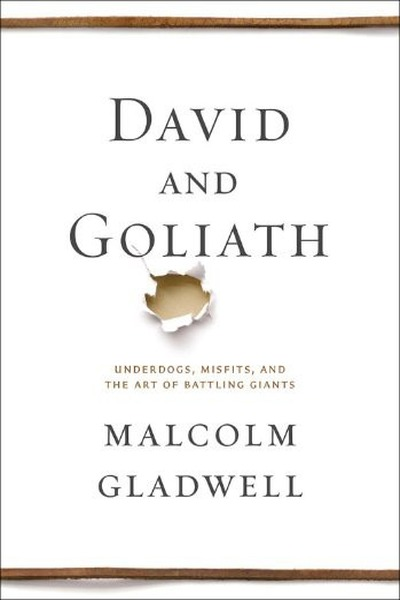

Library › Psychology & People
David and Goliath — Summary & Key Lessons

Underdogs, misfits and the art of battling giants — why disadvantage can be advantage.
📖 OPEN THE FULL INTERACTIVE BREAKDOWN →🌐 Read it in Hindi, Hinglish, Gujarati, Tamil & 22 more languages — free, with audio.
💡 The Big Idea
Gladwell re-examines the David and Goliath story and finds the giant was actually vulnerable — slow, heavily armored, poor vision — while David's sling was a devastating long-range weapon. The pattern repeats across history: apparent disadvantages (small size, dyslexia, loss, poverty) often conceal strategic advantages, and apparent advantages breed complacency. The underdog's edge is refusing to play the giant's game.
🧠 The 6 Key Lessons
Lesson 1: The Giant's Strength Is Often Its Weakness
Chapter 1: Goliath
Gladwell's medical re-reading: Goliath's size and armor were liabilities — the heavy bronze armor slowed him, and a possible vision condition (acromegaly) made him vulnerable to exactly the sling David carried. Giants win by intimidation until someone refuses to be intimidated and attacks the weakness inside the strength. Never accept the giant's framing of the battlefield.
📖 Example: David refused armor and a sword — the giant's weapons — and used the sling, a weapon he had mastered protecting sheep. The 'weakest' fighter won because he fought on his own terms, at his own range, against the giant's actual vulnerability rather than his… Read the full example →
⚡ Do this: Identify the 'giant' you face — a competitor, a system, a fear — and map what hidden weakness sits inside its visible strength.
Lesson 2: Desirable Difficulties: What Doesn't Kill You Makes You... Stronger
Chapter 2: The Disadvantages of Advantage
Gladwell shows that some disadvantages — dyslexia, the loss of a parent, poverty, being the small kid — force the development of compensating skills: focus, empathy, resilience and unconventional thinking. The same difficulty that breaks some people forges others, and the difference is often the presence of a caring adult and enough hope. Adversity is not a guarantee of strength, but strength often requires some adversity.
📖 Example: Many of the most successful entrepreneurs and lawyers in Gladwell's book are dyslexic — they succeeded not despite it but because it forced them to simplify, delegate and think differently. The struggle that looked like a handicap was the training ground for… Read the full example →
⚡ Do this: List two 'disadvantages' you carry and name one skill each forced you to develop that others lack.
Lesson 3: The Power of Limits: Fewer Options, Better Choices
Chapter 3: The Trouble With Too Much
Gladwell's chapter on class size and parenting shows that more isn't always better: too many choices, too many resources and too much protection can dilute focus and resilience. Constraints concentrate the mind. The underdog's scarcity becomes an advantage when it forces prioritization.
📖 Example: Smaller classes don't always outperform larger ones, and the children of ultra-rich, ultra-protective parents often struggle with independence — while kids given a few clear rules and real responsibilities develop judgment. Limits can be the gift that… Read the full example →
⚡ Do this: Impose one deliberate constraint on your next project — a smaller budget, a shorter deadline, a smaller team — and watch focus sharpen.
Lesson 4: Legitimacy Beats Force: Why People Follow
Chapter 4: The Limits of Power
In the chapter on the Troubles and policing, Gladwell shows that power exercised without legitimacy breeds resistance — people obey when they feel the rules are fair, the process is respectful and they have a voice. Force without legitimacy is a giant that creates its own Davids. The lesson applies to every authority: your power is only as durable as your legitimacy.
📖 Example: Heavy-handed policing in minority communities generated resentment and resistance that smarter, legitimacy-building approaches avoided — the same outcomes achieved with far less force when people felt heard and respected. Authority that listens costs less… Read the full example →
⚡ Do this: Audit how you exercise authority: do the people affected feel the process is fair and their voice is heard? Fix one legitimacy gap.
Lesson 5: The Worthy Opponent Effect
Chapter 5: The Two Sides of Struggle
Gladwell's study of cancer patients and 'post-traumatic growth' reveals a paradox: some people are shattered by suffering, while others emerge with deepened purpose, relationships and appreciation. The difference is not the event but the meaning made of it — and the support around the person. Struggle can forge strength, but only when it is survivable and accompanied by hope.
📖 Example: In his chapter on the two children with cancer, one family was broken while the other found profound meaning and closeness — the medical reality was similar; the narrative and support differed. The same fire that forges steel melts wax. Read the full example →
⚡ Do this: If you're carrying a struggle, write the meaning you can make of it — and ensure you have support around you, not just strength inside you.
Lesson 6: Refuse the Giant's Rules of Engagement
Chapter 6: The Art of the Underdog
The book's synthesis: underdogs win when they refuse to compete on the terms set by the powerful — they change the game, the metric, the battlefield or the timing. The giant's resources become irrelevant if the fight happens where they can't be used. Strategy for the small: never accept the incumbent's definition of how to compete.
📖 Example: From Lawrence of Arabia's desert raids to startups that ignore the industry's pricing model, the pattern repeats: the side that changes the rules neutralizes the other side's size. David didn't get stronger; he made Goliath's strength irrelevant. Read the full example →
⚡ Do this: Ask of your biggest challenge: what rule am I accepting that I could change? Design one move that makes the giant's strength irrelevant.
✅ 5-Step Action Plan
- Map the hidden weakness inside your biggest competitor's strength
- List two disadvantages that gave you skills others lack
- Impose one deliberate constraint on your next project
- Fix one legitimacy gap in how you exercise authority
- Design one move that changes the rules of your biggest fight
⚠️ When This Doesn't Work
⚠️ When this doesn't work: The 'disadvantage as advantage' frame can romanticize real suffering — dyslexia, poverty and loss break far more people than they forge, and survivors' strength never justifies inflicting hardship on anyone. Use the strategic insights for competition, not as a story to tell others about their pain.
💀 The Graveyard Proves It
📼 Blockbuster — The $50M 'No' Worth $150 Billion. Burn: 9,000 stores → 1. Read the full case study →
💬 Best Quotes from David and Goliath
- “Giants are not what we think they are. The same qualities that appear to give them strength are often the sources of their weakness.”
- “We have a definition in our heads of what an advantage is — and the definition is often wrong.”
- “Courage is not something that you already have; it is something that you earn through action.”
Interactive version: mark lessons as read, listen in your language, share quote cards.